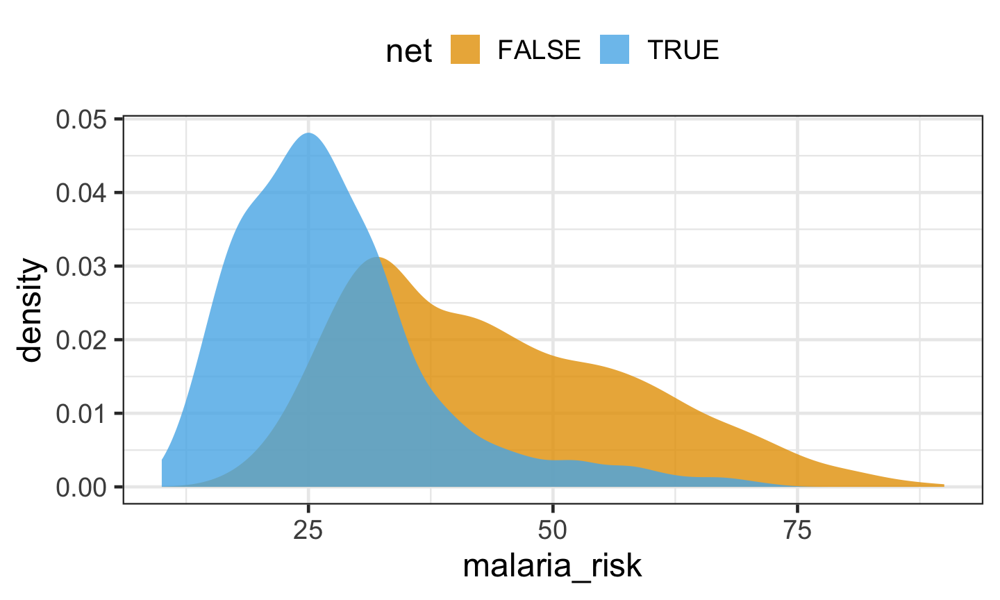

Last week we introduced the modeltime and timetk R packages.
We showed how these integrate into the tidymodels workflows for predicting timeseries.
This week
Introduction to the fundamental problems of causal inference and the biases of some intuitive estimators,
Develop a basic understanding of the tools used to state and then satisfy causality assumptions,
Understanding of how econometric methods recover treatment effects,
Ability to use these methods and estimate their precision using R.
Statistical Basis of Causal Inference
The fundamental problems of inference
When trying to estimate the effect of a treatment / intervention on an outcome, we face two very difficult problems: the Fundamental Problem of Causal Inference (FPCI) and the Fundamental Problem of Statistical Inference (FPSI).
In this lecture we’ll assume all interventions are binary, e.g. we offer a customer a discount or we don’t; we re-brand a branch office or we don’t.
Rubin Causal Model (RCM1)
RCM is made of three distinct building blocks:
a treatment allocation rule, that decides which unit receives the treatment / intervention;
a definition of potential outcomes that measure how each unit reacts to the treatment;
the switching equation that relates potential outcomes to observed outcomes through the allocation rule.
Treatment allocation
Treatment allocation is represented by the variable \(D_i\), where \(D_i=1\) if unit \(i\) receives the treatment and \(D_i=0\) if unit \(i\) does not receive the treatment.
The treatment allocation rule is critical:
it switches the treatment on or off for each unit, it is going to be at the source of the FPCI.
the specific properties of the treatment allocation rule are going to matter for the feasibility and bias of various effect estimation methods.
Potential outcomes
Each unit can be treated or untreated, and so there are two potential outcomes:
\(Y_i^1\): the outcome unit \(i\) will have, if treated
\(Y_i^0\): the outcome unit \(i\) will have, if not treated
Example
customer
\(Y^1\)
\(Y^0\)
\(\text{D}\)
\(\text{outcome Y}\)
treatment effect
1
500
450
1
500
50
2
600
600
1
600
0
3
800
600
0
600
200
4
700
750
0
750
-50
In this example \(\text{ATE}=\left(50+0+200-50\right)/4=50\) and \(\text{ATT}=\left(50+0\right)/2=25\).
But this example imagines that we know the counterfactuals (i.e. \(Y^0\) for \(D=1\) and \(Y^1\) for \(D=0\)), when we never do.
The next example comparing the outcomes with and without treatment is more realistic.
Example
customer
\(Y^1\)
\(Y^0\)
\(\text{D}\)
\(\text{outcome Y}\)
treatment effect
1
500
NA
1
500
NA
2
600
NA
1
600
NA
3
NA
600
0
600
NA
4
NA
750
0
750
NA
Given these observations, and comparing the mean of the treated outcomes to the mean of the untreated outcomes: \(\text{ATE}\ne\Delta_\text{WW}=\left(500+600\right)/2-\left(600+750\right)/2=-125\).
The \(\Delta_\text{WW}\) is a biased estimate of the \(\text{ATE}\) because the untreated are bigger spenders than the treated on average.
Switching equation
Here is the switching equation. It links the observed outcome to the potential outcomes through the allocation rule:
What the switching equation means is that, for each unit \(i\) we get to observe only one of the two potential outcomes. we can never see both potential outcomes for the same unit at the same time.
For each of the units, one of the two potential outcomes is unobserved - it is counterfactual. It can be conceived by an effort of reason: it is the consequence of what would have happened had some action not been taken.
Treatment effects
Now we can defined the causal effect:
The unit level treatment effect1 is defined as
\[
\Delta_i^Y=Y_i^1-Y_i^0
\] (which cannot be observed).
Treatment effects
Average treatment effect on the treated (TT1) gives us summary stats (in the population [\(TT\)] or sample [\(TT_s\)]).
\[
\Delta_{TT_{s}}^{Y}=\frac{1}{\sum_{i=1}^{N}D_{i}}\sum_{i=1}^{N}\left(Y_{i}^{1}-Y_{i}^{0}\right)D_{i}
\] with the corresponding expected value in the population
It is impossible to observe TT, either in the population or in the sample.
\[
\begin{align*}
\Delta_{TT_{s}}^{Y} & =\frac{1}{\sum_{i=1}^{N}D_{i}}\sum_{i=1}^{N}\left(Y_{i}^{1}-Y_{i}^{0}\right)D_{i}\\
& =\frac{1}{\sum_{i=1}^{N}D_{i}}\sum_{i=1}^{N}Y_{i}^1D_{i}-\frac{1}{\sum_{i=1}^{N}D_{i}}\sum_{i=1}^{N}Y_{i}^{0}D_{i}
\end{align*}
\] but \(Y_{i}^{0}D_{i}\) is unobserved when \(D_i=1\).
Intuitive casual estimators
Intuitive comparisons are often made in order to estimate causal effects, e.g. the with/without comparison (WW).
WW compares the average outcomes of the treated units with those of the untreated units.
Intuitive comparisons try to proxy for the expected counterfactual outcome in the treated group by using an observed quantity.
Intuitive casual estimators
Unfortunately, these proxies are generally poor and provide biased estimates of TT.
The reason that these proxies are poor is that the treatment is not the only factor that differentiates the treated group from the groups used to form the proxy. The intuitive comparisons are biased because factors other than the treatment are correlated to its allocation.
With non-zero selection bias, selection into the treatment biases the effect of the treatment on outcomes.
With/Without comparison
Confounding factors are the factors that generate differences between treated and untreated individuals even in the absence of the treatment.
Suppose we wanted to test giving discounts to our smaller-value customers to induce them to buy more. The results of the test could be biased if small-value customer would just buy less anyway.
The mere fact of being selected for receiving the discount means that these customers have a host of characteristics that would differentiate them from the unselected customers.
i.e. the expected counterfactual outcome of the treated is equal to the expected potential outcome of the untreated .
This is called the identification assumption.
Identification assumption
For the identification assumption to hold, it has to be that all the determinants of \(D_i\) are actually unrelated to \(Y_i^0\).
One way to enforce this assumption is to randomize treatment assignment.
One way to test for the validity of the identification assumption is to compare the values of observed covariates in the treated and untreated group, because differences in covariates can lead to confounding.
Identification assumption
If the identification assumption holds, and the treatment assignment is (effectively) independent of the outcome, then
\[
\begin{align*}
\Delta_{WW}^{Y} & =\mathbb{E}\left[\left.Y_{i}\right|D_{i}=1\right]-\mathbb{E}\left[\left.Y_{i}\right|D_{i}=0\right]\\
& =\mathbb{E}\left[Y_{i}\right]-\mathbb{E}\left[Y_{i}\right]\\
& =\Delta_{ATE}^{Y}
\end{align*}
\] where \(\Delta_{ATE}^{Y}\) is the average treatment effect in the population.
Fundamental problems
The FPCI states that our causal parameter of interest (\(\Delta_{TT}^{Y}\) - the effect of treatment on the treated) is fundamentally unobservable, even when the sample size is infinite.
The FPSI states that, even if we have an estimator \(E\) that identifies \(\Delta_{TT}^{Y}\) in the population, we cannot observe \(E\) because we only have access to a finite sample of the population.
Causal Inference in R
Causal Inference Workflow
Specify a causal question
Draw our assumptions using a causal diagram (DAG)
Model our assumptions
Diagnose our models
Estimate the causal effect
Conduct sensitivity analysis on the effect estimate
Important
The following material is from Causal Inference in R by Barrett, D’Agostino McGowan & Gerke under a MIT + file license.
DAGS
Directed acyclic graphs (DAGs)
Figure 1: A causal directed acyclic graph (DAG). DAGs depict causal relationships. In this DAG, the assumption is that x causes y.
DAGs
Figure 2: Three types of causal relationships: forks, chains, and colliders. The direction of the arrows and the relationships of interest dictate which type of path a series of variables represents. Forks represent a mutual cause, chains represent direct causes, and colliders represent a mutual descendant.
DAGs
Forks represent a common cause of two variables. Here, we’re saying that q causes both x and y, the traditional definition of a confounder. They’re called forks because the arrows from x to y are in different directions.
Chains, on the other hand, represent a series of arrows going in the same direction. Here, q is called a mediator: it is along the causal path from x to y. In this diagram, the only path from x to y is mediated through q.
Finally, a collider is a path where two arrowheads meet at a variable. Because causality always goes forward in time, this naturally means that the collider variable is caused by two other variables. Here, we’re saying that x and y both cause q.
DAGs
These three types of paths have different implications for the statistical relationship between x and y. If we only look at the correlation between the two variables under these assumptions:
In the fork, x and y will be associated, despite there being no arrow from x to y.
In the chain, x and y are related only through q.
In the collider, x and y will not be related.
Paths that transmit association are called open paths. Paths that do not transmit association are called closed paths. Forks and chains are open, while colliders are closed.
DAGs - forks
So, should we adjust for q, i.e. include q in our model? That depends on the nature of the path.
Forks are confounding paths. Because q causes both x and y, x and y will have a spurious association. They both contain information from q, their mutual cause. That mutual causal relationship makes x and y associated statistically.
Adjusting for q, i.e. fixing the value of q, will block the bias from confounding and give us the true relationship between x and y.
DAGs - mediators
For chains, whether or not we adjust for mediators depends on the research question.
Here, adjusting for q would result in a null estimate of the effect of x on y. Because the only effect of x on y is via q, no other effect remains.
The effect of x on y mediated by q is called the indirect effect, while the effect of x on y directly is called the direct effect. If we’re only interested in the direct effect, controlling for q might be what we want. If we want to know about both effects, we shouldn’t try to adjust for q.
DAGs - colliders
Colliders are different. In the collider DAG of Figure 2, x and y are not associated, but both cause q.
Adjusting for q has the opposite effect than with confounding: it opens a biasing pathway.
Sometimes, people draw the path opened up by conditioning on a collider connecting x and y.
DAGs - colliders
How can this be? Since x and y happen before q, q can’t impact them.
Let’s turn the DAG on its side and consider Figure 3 on the next slide. If we break down the two time points, at time point 1, q hasn’t happened yet, and x and y are unrelated. At time point 2, q happens due to x and y. But causality only goes forward in time.
q happening later can’t change the fact that x and y happened independently in the past.
DAGs - colliders
Figure 3: A collider relationship over two points in time. At time point one, there is no relationship between x and y. Both cause q by time point two, but this does not change what already happened at time point one.
DAGs - colliders
Causality only goes forward. Association, however, is time-agnostic. It’s just an observation about the numerical relationships between variables. When we control for the future, we risk introducing bias. It takes time to develop an intuition for this.
Consider a case where x and y are the only causes of q, and all three variables are binary. When either x or y equals 1, then q happens. If we know q = 1 and x = 0 then logically it must be that y = 1. Thus, knowing about q gives us information about y via x.
This example is extreme, but it shows how this type of bias, sometimes called collider-stratification bias or selection bias, occurs: conditioning on q provides statistical information about x and y and distorts their relationship.
DAGs
Correctly identifying the causal structure between the exposure and outcome helps us
communicate the assumptions we’re making about the relationships between variables, and
identify sources of bias.
Importantly, in doing 2), we are also often able to identify ways to prevent bias based on the assumptions in 1). In the simple case of the three DAGs (Figure 2), we know whether or not to control for q depending on the nature of the causal structure. The set or sets of variables we need to adjust for is called the adjustment set. DAGs can help us identify adjustment sets even in complex settings.
DAGs - exchangeability
We commonly refer to exchangeability as the assumption of no confounding. Actually, this isn’t quite right. It’s the assumption of no open, non-causal paths. Many times, these are confounding pathways. However, conditioning on a collider can also open paths. Even though these aren’t confounders, doing so creates non-exchangeability between the two groups: they are different in a way that matters to the exposure and outcome.
Open, non-causal paths are also called backdoor paths. We’ll use this terminology often because it captures the idea well: these are any open paths biasing the effect we’re interested in estimating.
DAGs - exchangeability vs identification
Exchangeability is one of the assumptions that can help in achieving identification. If you can assume exchangeability, then you can often identify the causal effect using the observed data.
Exchangeability is more about the structure of the data and the treatment assignment mechanism, while identification is a broader concept that encompasses the entire process of linking causal models to statistical models and data.
DAGs - visualization
To create a DAG object, we’ll use ggdag::dagify() which returns a dagitty object that works with both the dagitty and ggdag packages.
The dagify() function takes formulas, separated by commas, that specify causes and effects, with the left element of the formula defining the effect and the right all of the factors that cause it. This is just like the type of formula we specify for most regression models in R.
What are all of the factors that cause graduate students to listen to a podcast the morning before an exam? What are all of the factors that could cause a graduate student to do well on a test? Let’s posit some here.
a graduate student’s mood, sense of humor, and how prepared they feel for the exam could influence whether they listened to a podcast the morning of the test, and
their mood and how prepared they are also influence their exam score.
Notice we do not see podcast in the exam equation; this means that we assume that there is no causal relationship between podcast and the exam score.
DAGs - visualization
Some other useful arguments for dagify():
exposure and outcome: Telling ggdag the variables that are the exposure and outcome of your research question is required for many of the most valuable queries we can make of DAGs.
latent: This argument lets us tell ggdag that some variables in the DAG are unmeasured. latent helps identify valid adjustment sets with the data we actually have.
coords: Coordinates for the variables. You can choose between algorithmic or manual layouts, as discussed below. We’ll use time_ordered_coords() here.
labels: A character vector of labels for the variables.
DAGs - visualization
Code
podcast_dag <- ggdag::dagify( podcast ~ mood + humor + prepared, exam ~ mood + prepared,coords = ggdag::time_ordered_coords(list(c("prepared", "humor", "mood"), # time point 1"podcast", # time point 2"exam"# time point 3 ) ),exposure ="podcast",outcome ="exam",labels =c(podcast ="podcast",exam ="exam score",mood ="mood",humor ="humor",prepared ="prepared" ))ggdag::ggdag(podcast_dag, use_labels ="label", text =FALSE) + ggdag::theme_dag()
Figure 4: Proposed DAG to answer the question: Does listening to a comedy podcast the morning before an exam improve graduate students’ test scores?
DAGs - open paths
We’ve specified the DAG for this question and told ggdag what the exposure and outcome of interest are. According to the DAG, there is no direct causal relationship between listening to a podcast and exam scores.
Are there any other open paths? ggdag_paths() takes a DAG and visualizes the open paths.
These are both forks—confounding pathways. Since there is no causal relationship between listening to a podcast and exam scores, the only open paths are backdoor paths, these two confounding pathways.
DAGs - open paths
Code
podcast_dag |># show the whole dag as a light gray shadow rather than just the paths ggdag::ggdag_paths(shadow =TRUE, text =FALSE, use_labels ="label") + ggdag::theme_dag()
Figure 5: ggdag_paths() visualizes open paths in a DAG. There are two open paths in podcast_dag: the fork from mood and the fork from prepared.
DAGs - open paths
DAGs are not pure data frames, but you can retrieve either the dataframe or dagitty object to work with them directly using pull_dag_data() or pull_dag(). pull_dag() can be useful when you want to work with dagitty functions:
ggdag::ggdag_adjustment_set() visualizes any valid adjustment sets implied by the DAG. Figure 5.11 shows adjusted variables as squares. Any arrows coming out of adjusted variables are removed from the DAG because the path is longer open at that variable.
ggdag::ggdag_adjustment_set( podcast_dag, text =FALSE, use_labels ="label") + ggdag::theme_dag()
Figure 6: A visualization of the minimal adjustment set for the podcast-exam DAG. If this DAG is correct, two variables are required to block the backdoor paths: mood and prepared.
DAGs - open paths
Figure 6 shows the minimal adjustment set. By default, ggdag returns the set(s) that can close all backdoor paths with the fewest number of variables possible.
In this DAG, that’s just one set: mood and prepared. This set makes sense because there are two backdoor paths, and the only other variables on them besides the exposure and outcome are these two variables.
So, at minimum, we must account for both to get a valid estimate.
Minimal adjustment sets are only one type of valid adjustment set. Sometimes, other combinations of variables can get us an unbiased effect estimate. Two other options available in ggdag are full adjustment sets and canonical adjustment sets. Full adjustment sets are every combination of variables that result in a valid set.
DAGs - open paths
Code
ggdag::ggdag_adjustment_set( podcast_dag, text =FALSE, use_labels ="label",# get full adjustment setstype ="all") + ggdag::theme_dag()
Figure 7: All valid adjustment sets for podcast_dag.
Since we have simulated this data, we know that this is a case where standard methods will succeed and, therefore, can estimate the causal effect using a basic linear regression model.
Figure 8 (Estimates tab) shows a forest plot of the simulated data based on our DAG. Notice the model that only included the exposure resulted in a spurious effect (an estimate of >0.1 when we know the truth is 0).
By contrast, the model that adjusted for the two variables as suggested by ggdag_adjustment_set() is not spurious (much closer to 0).
Code
## Model that does not close backdoor pathsunadjusted_model <-lm(exam ~ podcast, sim_data) |> broom::tidy(conf.int =TRUE) |> dplyr::filter(term =="podcast") |> dplyr::mutate(formula ="podcast")## Model that closes backdoor pathsadjusted_model <-lm(exam ~ podcast + mood + prepared, sim_data) |> broom::tidy(conf.int =TRUE) |> dplyr::filter(term =="podcast") |> dplyr::mutate(formula ="podcast + mood + prepared")dplyr::bind_rows( unadjusted_model, adjusted_model) |>ggplot(aes(x = estimate, y = formula, xmin = conf.low, xmax = conf.high)) +geom_vline(xintercept =0, linewidth =1, color ="grey80") +geom_pointrange(fatten =3, size =1) +theme_minimal(18) +labs(y =NULL,caption ="correct effect size: 0" )
Figure 8: Forest plot of simulated data based on the DAG described in Figure 4.
DAGs - advanced confounding
In podcast_dag, mood and prepared were direct confounders: an arrow was going directly from them to podcast and exam.
Often, backdoor paths are more complex. For example, let’s add two new variables: alertness and skills_course. alertness represents the feeling of alertness from a good mood, thus an arrow from mood to alertness. skills_course represents whether the student took a College Skills Course and learned time management techniques.
Now, skills_course is what frees up the time to listen to a podcast as well as being prepared for the exam. mood and prepared are no longer direct confounders: they are two variables along a more complex backdoor path. Additionally, we’ve added an arrow going from humor to mood.
Figure 9: An expanded version of podcast_dag that includes two additional variables: skills_course, representing a College Skills Course, and alertness.
DAGs - advanced confounding
Now there are three backdoor paths we need to close: podcast <- humor -> mood -> alertness -> exam, podcast <- mood -> alertness -> exam, and podcast <- skills_course -> prepared -> exam.
ggdag::ggdag_paths(podcast_dag2, use_labels ="label", text =FALSE, shadow =TRUE) + ggdag::theme_dag()
Figure 10: Three open paths in podcast_dag2. Since there is no effect of podcast on exam, all three are backdoor paths that must be closed to get the correct effect.
DAGs - advanced confounding
There are four minimal adjustment sets to close all three paths (and eighteen full adjustment sets!). The minimal adjustment sets are alertness + prepared, alertness + skills_course, mood + prepared, mood + skills_course.
We can now block the open paths in several ways - mood and prepared still work, but we’ve got other options now.
Notably, prepared and alertness could happen at the same time or even after podcast. skills_course and mood still happen before both podcast and exam, so the idea is still the same: the confounding pathway starts before the exposure and outcome.
The next slide shows the result of executing the following code:
ggdag::ggdag_adjustment_set(podcast_dag2, use_labels ="label", text =FALSE)
DAGs - advanced confounding
Figure 11: Valid minimal adjustment sets that will close the backdoor paths in Figure 10.
DAGs - advanced confounding
Deciding between these adjustment sets is a matter of judgment: if all data are perfectly measured, the DAG is correct, and we’ve modeled them correctly, then it doesn’t matter which we use. Each adjustment set will result in an unbiased estimate.
All three of those assumptions are usually untrue to some degree. Let’s consider the path via skills_course and prepared.
It may be that we are better able to assess whether or not someone took the College Skills Course than how prepared for the exam they are. In that case, an adjustment set with skills_course is a better option.
But perhaps we better understand the relationship between preparedness and exam results. If we have it measured, controlling for that might be better. We could get the best of both worlds by including both variables: between the better measurement of skills_course and the better modeling of prepared, we might have a better chance of minimizing confounding from this path.
DAGs - selection bias
Selection bias is another name for the type of bias that is induced by adjusting for a collider. It’s called “selection bias” because a common form of collider-induced bias is a variable inherently stratified upon by the design of the study—selection into the study.
Let’s consider a case based on the original podcast_dag but with one additional variable: whether or not the student showed up to the exam.
Now, there is an indirect effect of podcast on exam: listening to a podcast influences whether or not the students attend the exam. The true result of exam is missing for those who didn’t show up; by studying the group of people who did show up, we are inherently stratifying on this variable.
DAGs - selection bias
Code
podcast_dag3 <- ggdag::dagify( podcast ~ mood + humor + prepared, exam ~ mood + prepared + showed_up, showed_up ~ podcast + mood + prepared,coords = ggdag::time_ordered_coords(list(# time point 1c("prepared", "humor", "mood"), # time point 2"podcast", "showed_up", # time point 3"exam" ) ),exposure ="podcast",outcome ="exam",labels =c(podcast ="podcast",exam ="exam score",mood ="mood",humor ="humor",prepared ="prepared",showed_up ="showed up" ))ggdag::ggdag(podcast_dag3, use_labels ="label", text =FALSE) + ggdag::theme_dag()
Figure 12: Another variant of podcast_dag, this time including the inherent stratification on those who appear for the exam. There is still no direct effect of podcast on exam, but there is an indirect effect via showed_up.
DAGs - selection bias
The problem is that showed_up is both a collider and a mediator: stratifying on it induces a relationship between many of the variables in the DAG but blocks the indirect effect of podcast on exam.
Luckily, the adjustment sets can handle the first problem; because showed_up happens beforeexam, we’re less at risk of collider bias between the exposure and outcome.
Unfortunately, we cannot calculate the total effect of podcast on exam because part of the effect is missing: the indirect effect is closed at showed_up.
Figure 13: The adjustment set for podcast_dag3 given that the data are inherently conditioned on showing up to the exam. In this case, there is no way to recover an unbiased estimate of the total effect of podcast on exam.
DAGs - selection bias
Sometimes, you can still estimate effects in this situation by changing the estimate you wish to calculate. We can’t calculate the total effect because we are missing the indirect effect, but we can still calculate the direct effect of podcast on exam.
Figure 14: The adjustment set for podcast_dag3 when targeting a different effect. There is one minimal adjustment set that we can use to estimate the direct effect of podcast on exam.
DAGs - M-Bias and Butterfly Bias
A particular case of selection bias that you’ll often see is M-bias. It’s called M-bias because it looks like an M when arranged top to bottom.
Tip
ggdag has several quick-DAGs for demonstrating basic causal structures, including confounder_triangle(), collider_triangle(), m_bias(), and butterfly_bias().
dagitty::paths( ggdag::m_bias() )
$paths
[1] "x <- a -> m <- b -> y"
$open
[1] FALSE
Figure 15: A DAG representing M-Bias, a situation where a collider predates the exposure and outcome.
DAGs - M-Bias and Butterfly Bias
Let’s focus on the mood path of the podcast-exam DAG.
What if we were wrong about mood, and the actual relationship was M-shaped? Let’s say that, rather than causing podcast and exam, mood was itself caused by two mutual causes of podcast and exam, u1 and u2.
We don’t know what u1 and u2 are, and we don’t have them measured. As above, there are no open paths in this subset of the DAG.
Figure 16: A reconfiguration of Figure 4 where mood is a collider on an M-shaped path.
DAGs - M-Bias and Butterfly Bias
The problem arises when we think our original DAG is the right DAG: mood is in the adjustment set, so we control for it. But this induces bias!
It opens up a path between u1 and u2, thus creating a path from podcast to exam.
If we had either u1 or u2 measured, we could adjust for them to close this path, but we don’t. There is no way to close this open path.
Figure 17: The adjustment set where mood is a collider. If we control for mood and don’t know about or have the unmeasured causes of mood, we have no means of closing the backdoor path opened by adjusting for a collider.
DAGs - One of exposure / outcome
Let’s consider one other type of causal structure that’s important: causes of the exposure and not the outcome, and their opposites, causes of the outcome and not the exposure.
Let’s add a variable, grader_mood, to the original DAG.
DAGs - One of exposure / outcome
Code
podcast_dag5 <- ggdag::dagify( podcast ~ mood + humor + prepared, exam ~ mood + prepared + grader_mood,coords = ggdag::time_ordered_coords(list(# time point 1c("prepared", "humor", "mood"), # time point 2c("podcast", "grader_mood"), # time point 3"exam" ) ),exposure ="podcast",outcome ="exam",labels =c(podcast ="podcast",exam ="exam score",mood ="student\nmood",humor ="humor",prepared ="prepared",grader_mood ="grader\nmood" ))ggdag::ggdag(podcast_dag5, use_labels ="label", text =FALSE) + ggdag::theme_dag()
Figure 18: A DAG containing a cause of the exposure that is not the cause of the outcome (humor) and a cause of the outcome that is not a cause of the exposure (grader_mood).
DAGs - One of exposure / outcome
Starting with humor:
Variables that cause the exposure but not the outcome are also called instrumental variables (IVs). IVs are an unusual circumstance where, under certain conditions, controlling for them can make other types of bias worse.
What’s unique about this is that IVs can also be used to conduct an entirely different approach to estimating an unbiased effect of the exposure on the outcome. IVs are commonly used this way in econometrics and are increasingly popular in other areas.
In short, IV analysis allows us to estimate the causal effect using a different set of assumptions than the approaches we’ve talked about thus far.
If you’re unsure if the variable is an IV or not, you should probably add it to your model: it’s more likely to be a confounder than an IV, and, it turns out, the bias from adding an IV is usually small in practice. So, like adjusting for a potential M-structure variable, the risk of bias is worse from confounding.
DAGs - One of exposure / outcome
About variables that are a cause of the outcome but are not the cause of the exposure:
We’ll call them precision variables because we’re concerned about the relationship to the research question at hand, not to another research question where they are exposures.
Like IVs, precision variables do not occur along paths from the exposure to the outcome. Thus, including them is not necessary.
Unlike IVs, including precision variables is beneficial. Including other causes of the outcomes helps a statistical model capture some of its variation.
This doesn’t impact the point estimate of the effect, but it does reduce the variance, resulting in smaller standard errors and narrower confidence intervals. Thus, it’s recommended they be included when possible.
DAGs - Construction
In principle, using DAGs is easy: specify the causal relationships you think exist and then query the DAG for information like valid adjustment sets.
In practice, assembling DAGs takes considerable time and thought. Next to defining the research question itself, it’s one of the most challenging steps in making causal inferences.
Very little guidance exists on best practices in assembling DAGs. The next few slides contain some approaches to consider:
DAGs - Construction
Iterate early and often
Make the DAG before you conduct the study, ideally before you even collect the data.
If you’re already working with your data, build your DAG before doing data analysis. Declaring your assumptions ahead of time can help clarify what you need to do, reduce the risk of overfitting (e.g., determining confounders incorrectly from the data), and give you time to get feedback on your DAG.
This last benefit is significant: you should ideally democratize your DAG. Share it early and often with others who are experts on the data, domain, and models.
If you have more than one candidate DAG, check their adjustment sets. If two DAGs have overlapping adjustment sets, focus on those sets; then, you can move forward in a way that satisfies the plausible assumptions you have.
DAGs - Construction
Consider your question
Some questions can be challenging to answer with certain data, while others are more approachable. You should consider precisely what it is you want to estimate.
Another important detail about how your DAG relates to your question is the population and time. Many causal structures are not static over time and space.
The same is true for confounders. Even if something can cause the exposure and outcome, if the prevalence of that thing is zero in the population you’re analyzing, it’s irrelevant to the causal question.
The reverse is also true: something might be unique to the target population.
DAGs - Construction
Order nodes by time
It is recommended to order your variables by time, either left-to-right or up-to-down. There are two reasons for this.
First, time ordering is an integral part of your assumptions. After all, something happening before another thing is a requirement for it to be a cause. Thinking this through carefully will clarify your DAG and the variables you need to address.
Second, after a certain level of complexity, it’s easier to read a DAG when arranged by time because you have to think less about that dimension; it’s inherent to the layout.
The time ordering algorithm in ggdag automates much of this for you, although it’s sometimes helpful to give it more information about the order.
DAGs - Construction
Order nodes by time - feedback loops
We might think about two things that mutually cause each other as happening in a circle, like global warming and A/C use (A/C use increases global warming, which makes it hotter, which increases A/C use, and so on).
It’s tempting to visualize that relationship like this:
Figure 19: A DAG representing the reciprocal relationship between A/C use and global temperature because of global warming. Feedback loops are useful mental shorthands to describe variables that impact each other over time compactly, but they are not true causal diagrams.
DAGs - Construction
Order nodes by time - feedback loops
From a DAG perspective, this is a problem because of the A part of DAG: it’s cyclic!
Feedback loops are a shorthand for what really happens, which is that the two variables mutually affect each other over time. Causality only goes forward in time, so it doesn’t make sense to go back and forth like in Figure 19.
Figure 20: A DAG showing the relationship between A/C use and global temperature over time. The true causal relationship in a feedback loop goes forward.
DAGs - Construction
Use robustness checks
Finally, check your DAG for robustness. It is unlikely the correctness of your DAG can be verified, but you can use the implications in your DAG to check the support for it. Some robustness checks:
DAG-data consistency. There are many implications of your DAG. Because blocking a path removes statistical dependencies from that path, you can check those assumptions in several places in your DAG (see dagitty::impliedConditionalIndependencies).
Alternate adjustment sets. Adjustment sets should give roughly the same answer because, outside of random and measurement errors, they are all sets that block backdoor paths. If more than one adjustment set seems reasonable, you can use that as a sensitivity analysis by checking multiple models.
The checks should be complementary to your initial DAG, not a way of replacing it. If you use more than one adjustment set during your analysis, you should report the results from all of them to avoid overfitting your results to your data.
Example: mosquito nets and malaria
Example: steps
In the remainder of today’s slides, we’ll analyze simulated data using a few key steps
Specify a causal question
Draw our assumptions using a causal diagram
Model our assumptions
Diagnose our models
Estimate the causal effect
Conduct sensitivity analysis on the effect estimate
Example: causal question
Researchers are interested in whether using mosquito nets decreases an individual’s risk of contracting malaria. They have collected data from 1,752 households in an unnamed country and have variables related to environmental factors, individual health, and household characteristics. The data is not experimental—researchers have no control over who uses mosquito nets, and individual households make their own choices over whether to apply for free nets or buy their own nets, as well as whether they use the nets if they have them.
Example: causal question
id - an ID variable
net and net_num - a binary variable indicating if the participant used a net (1) or didn’t use a net (0)
malaria_risk- risk of malaria scale ranging from 0-100
income - weekly income, measured in dollars
health - a health score scale ranging from 0–100
household - number of people living in the household
eligible - a binary variable indicating if the household is eligible for the free net program.
temperature - the average temperature at night, in Celsius
resistance - Insecticide resistance of local mosquitoes. A scale of 0–100, with higher values indicating higher resistance.
Example: causal question
The distribution of malaria risk appears to be quite different by net usage.

Figure 21: A density plot of malaria risk for those who did and did not use nets. The average risk of malaria is lower for those who use nets.
Example: causal question
In Figure 21, the density of those who used nets is to the left of those who did not use nets. The mean difference in malaria risk is about 16.4, suggesting net use might be protective against malaria.
The problem that we face is that other factors may be responsible for the effect we’re seeing.
In this example, we’ll focus on confounding: a common cause of net usage and malaria will bias the effect we see unless we account for it somehow.
To determine which variables we need to account we’ll use use a causal diagram or DAG, to visualize the assumptions that we’re making about the causal relationships between the exposure, outcome, and other variables we think might be related.
The proposed DAG for this question is one the next slide.
Example: assumptions using a DAG
Figure 22: A proposed causal diagram of the effect of bed net use on malaria. This directed acyclic graph (DAG) states our assumption that bed net use causes a reduction in malaria risk. It also says that we assume: malaria risk is impacted by net usage, income, health, temperature, and insecticide resistance; net usage is impacted by income, health, temperature, eligibility for the free net program, and the number of people in a household; eligibility for the free net programs is impacted by income and the number of people in a household; and health is impacted by income.
Example: assumptions using a DAG
Figure 23: In the proposed DAG, there are eight open pathways that contribute to the causal effect seen in the naive regression: the true effect (in green) of net usage on malaria risk and seven other confounding pathways (in orange). The naive estimate is wrong because it is a composite of all these effects.
Example: Model our assumptions
For this DAG, we need to control for three variables: health, income, and temperature. These three variables are a minimal adjustment set, the minimum set (or sets) of variables you need to block all confounding pathways.
We could estimate the causal effect using Regression Adjustment: including the minimal set of covariates in our regression.
Instead we’ll use a technique called Inverse Probability Weighting (IPW) to control for these variables:
We’ll use logistic regression to predict the probability of treatment—the propensity score. Then, we’ll calculate inverse probability weights to apply to the linear regression model we fit above.
The propensity score model includes the exposure—net use—as the dependent variable and the minimal adjustment set as the independent variables.
Example: Model our assumptions
The propensity score model is a logistic regression model with the formula net ~ income + health + temperature, which predicts the probability of bed net usage based on the confounders income, health, and temperature.
Code
propensity_model <-glm( net ~ income + health + temperature,data = causalworkshop::net_data,family =binomial())# the first six propensity scoreshead(predict(propensity_model, type ="response"))
We can use propensity scores to control for confounding in various ways. In this example, we’ll focus on weighting.
In particular, we’ll compute the inverse probability weight for the average treatment effect (ATE). The ATE represents a particular causal question: what if everyone in the study used bed nets vs. what if no one in the study used bed nets?
To calculate the ATE, we’ll use the broom and propensity packages. broom’s augment() function extracts prediction-related information from the model and joins it to the data. propensity’s wt_ate() function calculates the inverse probability weight given the propensity score and exposure.
Example: Model our assumptions
For inverse probability weighting, the ATE weight is the probability of receiving the treatment you actually received. In other words, if you used a bed net, the ATE weight is the probability that you used a net, and if you did not use a net, it is the probability that you did not use a net.
Code
net_data_wts <- propensity_model |> broom::augment(newdata = causalworkshop::net_data, type.predict ="response") |># .fitted is the value predicted by the model# for a given observation dplyr::mutate(wts = propensity::wt_ate(.fitted, net))net_data_wts |> dplyr::select(net, .fitted, wts) |> dplyr::slice_head(n=16)
wts represents the amount each observation will be up-weighted or down-weighted in the outcome model we will fit.
For instance, the 16th household used a bed net and had a predicted probability of 0.41. That’s a pretty low probability considering they did, in fact, use a net, so their weight is higher at 2.42. In other words, this household will be up-weighted compared to the naive linear model we fit above.
The first household did not use a bed net; they’re predicted probability of net use was 0.25 (or put differently, a predicted probability of not using a net of 0.75). That’s more in line with their observed value of net, but there’s still some predicted probability of using a net, so their weight is 1.28.
Example: Diagnose our models
The goal of propensity score weighting is to weight the population of observations such that the distribution of confounders is balanced between the exposure groups.
In principle, we’re removing the arrows between the confounders and exposure in the DAG, so that the confounding paths no longer distort our estimates.
Figure 24: A mirrored histogram of the propensity scores of those who used nets (top, blue) versus those who who did not use nets (bottom, orange). The range of propensity scores is similar between groups, with those who used nets slightly to the left of those who didn’t, but the shapes of the distribution are different.
Example: Diagnose our models
The weighted propensity score creates a pseudo-population where the distributions are much more similar:
Figure 25: A mirrored histogram of the propensity scores of those who used nets (top, blue) versus those who did not use nets (bottom, orange). The dark regions represent the unweighted distributions, and the lighter regions represent the weighted distributions. The ATE weights up-weight the groups to be similar in range and shape of the distribution of propensity scores.
Example: Diagnose our models
We might also want to know how well-balanced the groups are by each confounder. One way to do this is to calculate the standardized mean differences (SMDs) for each confounder with and without weights. We’ll calculate the SMDs with tidy_smd() then plot them with geom_love() (see SMD).
Figure 26: A love plot representing the standardized mean differences (SMD) between exposure groups of three confounders: temperature, income, and health. Before weighting, there are considerable differences in the groups. After weighting, the confounders are much more balanced between groups.
Example: Diagnose our models
Before we apply the weights to the outcome model, let’s check their overall distribution for extreme weights.
Extreme weights can destabilize the estimate and variance in the outcome model, so we want to be aware of it.
Figure 27: A density plot of the average treatment effect (ATE) weights. The plot is skewed, with higher values towards 8. This may indicate a problem with the model, but the weights aren’t so extreme to destabilize the variance of the estimate.
Example: Estimate the causal effect
We’re now ready to use the ATE weights to (attempt to) account for confounding in the naive linear regression model. Fitting such a model is pleasantly simple in this case: we fit the same model as before but with weights = wts, which will incorporate the inverse probability weights.
The estimate for the average treatment effect is -12.5 (95% CI -13.8, -11.3).
Example: Estimate the causal effect
Unfortunately, the confidence intervals don’t account for the dependence within the weights! Generally, confidence intervals for propensity-score weighted models will be too narrow unless we correct for this dependence.
The nominal coverage of the confidence intervals will thus be wrong (they aren’t 95% CIs because their coverage is much lower than 95%) and may lead to misinterpretation.
For this example, we’ll use the bootstrap, a flexible tool that calculates distributions of parameters using re-sampling. We’ll use the rsample package from tidymodels to work with bootstrap samples.
Example: Estimate the causal effect
Because the the inverse probability weights are not fixed values (they depend on the data), we need to account for this by bootstrapping the entire modeling process.
For every bootstrap sample, we need to fit the propensity score model, calculate the inverse probability weights, then fit the weighted outcome model, using the following function:
Code
fit_ipw <-function(split, ...) {# get bootstrapped data sample with `rsample::analysis()` .df <- rsample::analysis(split)# fit propensity score model propensity_model <-glm( net ~ income + health + temperature,data = .df,family =binomial() )# calculate inverse probability weights .df <- propensity_model |> broom::augment(type.predict ="response", data = .df) |> dplyr::mutate(wts = propensity::wt_ate(.fitted, net))# fit correctly bootstrapped ipw modellm(malaria_risk ~ net, data = .df, weights = wts) |> broom::tidy()}
Example: Estimate the causal effect
We generate a distribution of estimates as follows:
bootstrap - ipw - estimate
# create bootstrap samplesbootstrapped_net_data <- rsample::bootstraps( causalworkshop::net_data,times =1000,# required to calculate CIs laterapparent =TRUE)# create ipw and fit each bootstrap sampleipw_results <- bootstrapped_net_data |> dplyr::mutate(boot_fits = purrr::map(splits, fit_ipw))
distribution
ipw_results |>mutate(estimate =map_dbl( boot_fits,# pull the `estimate` for `netTRUE` for each fit \(.fit) .fit |>filter(term =="netTRUE") |>pull(estimate) ) ) |>ggplot(aes(estimate)) +geom_histogram(fill ="#D55E00FF", color ="white", alpha =0.8)
Figure 28: “A histogram of 1,000 bootstrapped estimates of the effect of net use on malaria risk. The spread of these estimates accounts for the dependency and uncertainty in the use of IPW weights.”
Example: Estimate the causal effect
Figure 28 gives a sense of the variation in estimate, but let’s calculate 95% confidence intervals from the bootstrapped distribution using rsample’s int_t() :
Now we have a confounder-adjusted estimate with correct standard errors. The estimate of the effect of all households using bed nets versus no households using bed nets on malaria risk is -12.5 (95% CI -13.4, -11.6).
Bed nets do indeed seem to reduce malaria risk in this study.
Example: Conduct sensitivity analysis
When conducting a causal analysis, it’s a good idea to use sensitivity analyses to test your assumptions. There are many potential sources of bias in any study and many sensitivity analyses to go along with them; we’ll focus on the assumption of no confounding.
When we have less information about unmeasured confounders, we can use tipping point analysis to ask how much confounding it would take to tip my estimate to the null. In other words, what would the strength of the unmeasured confounder have to be to explain our results away? The tipr package is a toolkit for conducting sensitivity analyses.
Example: Conduct sensitivity analysis
Assume an unknown, normally-distributed confounder.
The tip_coef() function takes an estimate (e.g. the upper or lower bound of the coefficient) and further requires either the
the scaled differences in means of the confounder between exposure groups, or
the effect of the confounder on the outcome.
For the estimate, we’ll use conf.high, which is closer to 0 (the null), and ask: how much would the confounder have to affect malaria risk to have an unbiased upper confidence interval of 0?
We’ll use tipr to calculate this answer for 5 scenarios, where the mean difference in the confounder between exposure groups is 1, 2, 3, 4, or 5.
Figure 29: A tipping point analysis under several confounding scenarios where the unmeasured confounder is a normally-distributed continuous variable. The line represents the strength of confounding necessary to tip the upper confidence interval of the causal effect estimate to 0. The x-axis represents the coefficient of the confounder-outcome relationship adjusted for the exposure and the set of measured confounders. The y-axis represents the scaled mean difference of the confounder between exposure groups.
where each value of \(Y\) is determined by the switching equation.
Whereas we need treatment to be conditionally independent of both potential outcomes to identify the ATE, we need only treatment to be conditionally independent of \(Y^0\) to identify the ATT and the fact that there exist some units in the control group for each treatment strata. Note, the reason for the common support assumption is because we are weighting the data; without common support, we cannot calculate the relevant weights.
Recap
We introduced the fundamental problems of inference and the biases of some intuitive estimators,
We developed a basic understanding of the tools used to state and then satisfy causality assumptions,
We looked at an example of how econometric methods recover treatment effects.